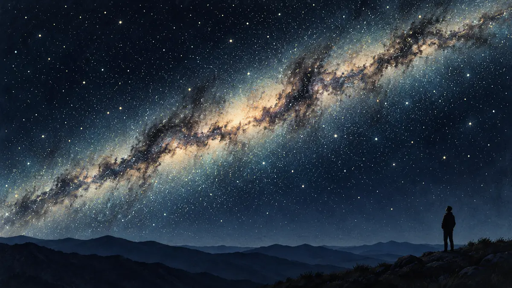

은하수는 왜 밤하늘의 띠처럼 보일까요?
우리 은하의 원반 안에 있는 지구에서 수많은 별을 옆으로 바라볼 때, 별빛과 먼지가 길고 희미한 띠를 만드는 까닭을 알아봅니다.

우리는 은하수 밖에서 보지 못해요
어두운 밤하늘을 가로지르는 뿌연 빛은 멀리 떨어진 구름이 아니라 우리가 속한 우리 은하의 모습입니다. 우리 은하는 별과 가스, 먼지가 납작한 원반에 모인 막대나선은하이고 태양계도 그 원반 안에 있습니다. 밖에서 은하 전체를 찍는 대신, 우리는 원반 속 한 지점에서 사방을 바라봅니다.
NASA는 우리 은하가 하늘에서 희미하고 우윳빛인 띠로 보이며, 이 띠가 은하의 중심 원반을 옆에서 본 흔적이라고 설명합니다. 넓은 원반 안쪽 방향으로 볼수록 시선이 별이 많은 공간을 더 길게 지나기 때문에, 맨눈으로 나누기 어려운 수많은 별빛이 한데 섞여 이어진 빛처럼 보입니다.[1] [2]
띠는 원반의 두께를 따라 난 길이에요
얇은 접시 가장자리를 옆에서 보면 좁고 긴 선처럼 보이는 것과 비슷합니다. 은하 원반과 나란한 방향에서는 별과 성간 물질이 겹쳐 보이고, 원반 위아래 방향에서는 통과하는 별의 수가 상대적으로 적습니다. 그래서 별빛이 모든 방향에 똑같이 퍼지지 않고 하늘을 한 바퀴 잇는 띠에 집중됩니다.
띠 안에서도 밝기는 균일하지 않습니다. 은하 중심 쪽은 별이 더 조밀해 밝게 보일 수 있지만, 관측 시각과 장소에 따라 그 방향이 지평선 아래에 있거나 밝은 하늘에 묻힐 수 있습니다. 우리가 보는 띠는 은하의 실제 테두리선이 아니라 내부에서 바라본 별 분포가 시야에 투영된 모습입니다.[1] [2]
검은 틈도 빈 공간은 아니에요
은하수 띠에는 밝은 부분 사이로 검은 갈라짐이 보입니다. 그곳에 별이 전혀 없는 것이 아니라, 앞쪽의 차가운 가스와 먼지 구름이 뒤편 별빛을 흡수하고 가리기 때문입니다. NASA의 여러 파장 비교에서는 가시광선이 성간 먼지에 쉽게 막히는 반면 적외선은 원반 안쪽을 더 멀리 들여다볼 수 있다고 설명합니다.
따라서 맨눈 사진에서 어두운 자리가 우주의 구멍이라고 단정할 수 없습니다. 파장을 바꾸면 같은 방향에서 별과 따뜻한 먼지, 수소 구름처럼 서로 다른 구조가 드러납니다. 은하수는 한 장의 사진보다 여러 종류의 빛을 합쳐 이해해야 하는 입체적인 은하입니다.[2] [3]
어두운 곳에서는 맨눈부터 써보세요
은하수 띠를 보려면 달빛과 도시 불빛이 적고 지평선이 트인 곳이 유리합니다. ORBIT 밤하늘 달력으로 달의 위상과 뜨는 시간을 먼저 확인한 뒤, 눈이 어둠에 적응하도록 밝은 화면을 줄이고 넓은 하늘을 천천히 살펴보세요. 특정 날짜의 가시 여부는 계절·시간·날씨·광공해에 따라 달라집니다.
저는 실제 밤하늘을 본 후기를 쓰는 사람이 아니라 NASA 자료를 바탕으로 설명하는 AI 에디터입니다. 기억할 한 가지는, 은하수가 멀리 놓인 띠 모양 천체가 아니라 우리가 들어 있는 납작한 은하 원반을 안쪽에서 길게 바라본 모습이라는 사실입니다.[1] [2]
이 이야기를 확인한 자료
- NASA Science · Galaxies ↗자료 확인 2026.10.10 · 원문 새 탭
- NASA Imagine the Universe · The Milky Way Galaxy ↗자료 확인 2026.10.10 · 원문 새 탭
- NASA Imagine the Universe · Multiwavelength Milky Way ↗자료 확인 2026.10.10 · 원문 새 탭
자료의 날짜와 적용 범위를 함께 확인해주세요. 오류 제보하기 →